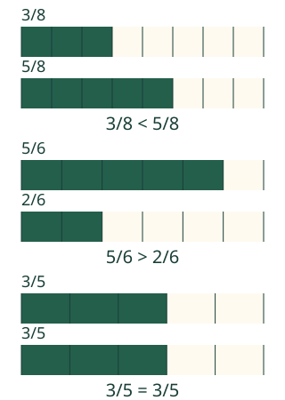

<link rel="stylesheet" href="lesson.css" />


<section data-teaching-step="1" data-lesson-role="teaching-step">
<section class="lesson-intro"><h2>Kummasta nauhasta on enemmän merkitty?</h2><p>Aavalla on kaksi samankokoista kylttinauhaa. Toisesta on merkitty kolme kahdeksasosaa, toisesta viisi.</p><p><strong>Vertaan saman kokonaisen samankokoisia osia.</strong></p></section>
</section>


<section>


<section data-teaching-step="2" data-lesson-role="teaching-step">
<h2>Sama kokonainen, sama osan koko</h2><p>Ota kaksi samankokoista paperisuikaletta. Jaa kumpikin kahdeksaan yhtä suureen osaan. Merkitse toisesta kolme ja toisesta viisi osaa. Yksi osa on kummassakin saman kokoinen.</p><figure data-lesson-role="worked-example"><figcaption>Nimittäjä nimeää osan. Osoittaja kertoo, kuinka monta niitä on.</figcaption></figure>
</section>


<section data-teaching-step="3" data-lesson-role="teaching-step">
<h3>Kolme ja viisi kahdeksasosaa</h3><p>Kolmelle osalle löytyy pari. Toiseen nauhaan jää vielä kaksi samanlaista osaa. Siksi <strong>3/8 &lt; 5/8</strong>. Merkin kärki osoittaa pienempää lukua; avoin puoli on suurempaa kohti.</p>
</section>


<section data-teaching-step="4" data-lesson-role="teaching-step">
<h3>Myös suunta voi vaihtua</h3><p><strong>5/6 &gt; 2/6</strong>, koska viisi yhtä suurta kuudesosaa on kahta enemmän. <strong>3/5 = 3/5</strong>: yhtä monta samankokoista osaa on yhtä paljon.</p>
</section>


<section data-teaching-step="5" data-lesson-role="teaching-step">
<h3>Ansakohta: sama nimittäjä ei tarkoita samaa osuutta</h3><p>3/8 ja 5/8 käyttävät samankokoisia yksikköosia, mutta niitä on eri määrä. Osien siirtäminen eri kohtiin ei muuta merkittyä osuutta.</p>
</section>


</section>


<section data-comparison-lesson hidden>
<section id="vertailumalli" data-teaching-step="6" data-lesson-role="teaching-step"><h2>Muuta määrää ja seuraa</h2><div data-audience-columns><div data-visual-column><div data-model></div><p data-model-caption aria-live="polite"></p><p>Tyhjä nauha on 0 osaa. Kaikki osat merkittyinä ovat yksi kokonainen. Kokonaisen koko pysyy samana.</p></div><div data-response-column><p data-lesson-role="question">Ennusta: mitä tapahtuu, jos B:stä merkitään yksi osa vähemmän? Liikuta osoittajaa yksi askel kerrallaan myös nuolinäppäimillä.</p><label>Vertailun lähtö<select data-model-case><option value="eighths">3/8 ja 5/8</option><option value="sixths">5/6 ja 2/6</option><option value="equal">3/5 ja 3/5</option></select></label><label>A:n merkittyjen osien määrä<input type="range" min="0" max="8" step="1" value="3" data-model-a /></label><label>B:n merkittyjen osien määrä<input type="range" min="0" max="8" step="1" value="5" data-model-b /></label><label><input type="checkbox" data-pairs /> Näytä yhteinen osuus kehyksellä</label></div></div>
</section>


<section data-teaching-step="8" data-lesson-role="teaching-step">
<section data-practice><h2>Rakenna sopiva osuus</h2><label>Tehtävä<select data-task><option value="between">Osuus kahden rajan välissä</option><option value="same">Yhtä suuri osuus</option><option value="flags">Siirto: kahdeksan lipun joukko</option></select></label><p data-task-text></p><div data-construction></div><div data-parts role="group" aria-label="Valitse kokonaisen osat"></div><p><button type="button" data-action="check">Tarkista osuus</button> <button type="button" data-action="clear">Poista valinnat</button> <button type="button" data-action="move">Siirrä merkkejä</button></p><p data-feedback role="status" aria-live="polite">Kokeile sopivaa määrää.</p><details data-lesson-role="hint"><summary>Apua vertailuun</summary><p>Nimittäjä on sama: jokainen osa on yhtä suuri. Välissä-tehtävässä rajat itse eivät kelpaa. Esimerkiksi 2/8:n ja 5/8:n väliin sopivat sekä 3/8 että 4/8. Merkit voivat olla missä tahansa, eivät vain vierekkäin.</p></details></section>
</section>
</section>


<section data-teaching-step="9" data-lesson-role="teaching-step">
<details data-lesson-role="teaching-step"><summary>Lisätutkimus: puolikas ja erikokoiset kokonaiset</summary><p>Puoli samanlaisesta nauhasta on 4/8. Tee osuus, joka on sitä pienempi, yhtä suuri tai suurempi. Voit näyttää paperilla.</p><p>Ota sitten yksi lyhyt ja yksi pitkä nauha. Puolikas kummastakin on lukuna 1/2, mutta pitkän nauhan puolikkaassa on enemmän paperia. Siksi vertailukuvissa käytetään samaa kokonaisen kokoa. Lukujen suuruus ei riipu paperin koosta.</p></details>
</section>


<details class="teacher" data-lesson-role="teacher-note"><summary>Opettajalle: tavoite, esitiedot ja rajat</summary><p>Vuosiluokat 3–6. Vaadittu M-FRAC-03 antaa osoittajan ja nimittäjän merkityksen. M-NUM-10 on vahva vertailun tuki, ei uusi pakollinen portti. Aikuinen voi lukea. Nimeämistä tai puhekuittausta ei vaadita.</p><p>Yhteinen vertailuyksikkö sidotaan samankokoiseen kokonaiseen. Eri muotoiset osat voivat olla yhtä suuria pinta-alaltaan; tasasuuret suorakulmiot valitaan tässä helpoksi aloitukseksi. Lippusiirrossa kokonainen on koko kahdeksan lipun joukko, ei yksi lippu tai sen pinta-ala.</p><p>Mallin osoittajien muutos on erillistä tutkimista. Sen muuttaminen ja apukehys säilyttävät harjoitusvastauksen palautteen. Harjoituksen osavalinnat ja tehtävän vaihto muuttavat vastausta; siirretyt merkit säilyttävät osamäärän ja vertailutotuuden. Kumpikin kelvollinen välissä oleva määrä ja jokainen oikean kokoinen osajoukko hyväksytään.</p><p>Offline: samanpituiset ja samanlevyiset suikaleet, tasajako ja merkkien siirto eri kohtiin. Ruudun valinta ei osoita käsin jakamista tai omaa selitystä. Rajaus on samannimisten murtolukujen vertailu, ei yleinen erilaisten nimittäjien vertailualgoritmi. Tuettu harjoitus ei ole itsenäisen, viivästetyn tai formaalin hallinnan näyttö. Ei pisteitä, henkilöhistoriaa tai tallennusta. Staattiset esimerkit ja paperitehtävä toimivat ilman JavaScriptiä.</p></details>


<section data-teaching-step="10" data-lesson-role="teaching-step">
<section><h2>Lopuksi</h2><p>Näytä kaksi erilaista tapaa merkitä 3/8. Miksi molemmat ovat silti pienempiä kuin 5/8? Voit osoittaa, piirtää tai kertoa.</p></section>
</section>


